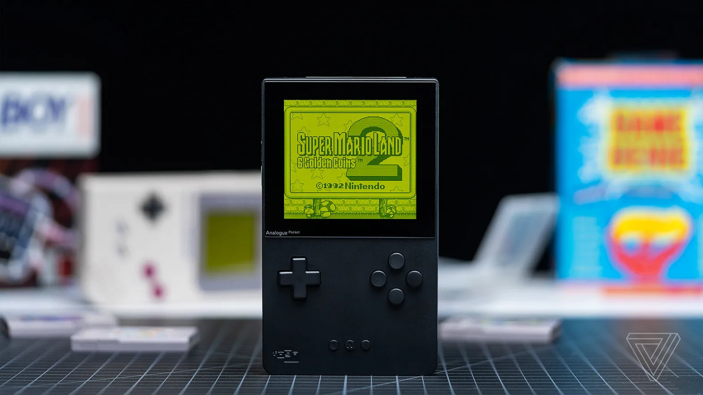
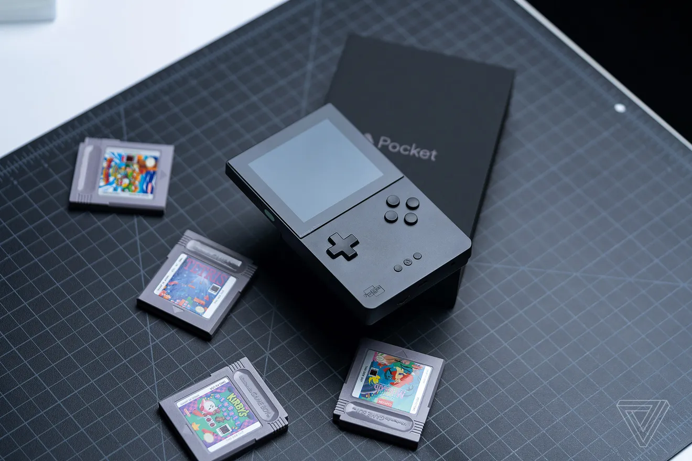

Analogue Pocket Review: Game Boy Games Have Never Looked So Good
A modern handheld that celebrates the classics
By Andrew Webster, from The Verge Dec 13, 2021, 11:00am ESTPhotography by Vjeran Pavic 
For the last week or so, I’ve been buried in cartridges from my youth. I’ve spent hours slicing through cute blue slimes in Dragon Warrior III and reacquainting myself with a decades-old team of monsters in Pokémon Yellow. While all my friends have been raving about Halo Infinite, I’ve instead been reminding myself just how inexplicably good Tony Hawk’s Pro Skater was on the Game Boy Advance.
Often going back to play classic games like this can be a reality check. There have been plenty of times when I’ve popped in an old cartridge only to realize that these games I grew up with just don’t look the way I remember them. But that hasn’t been the case this time — in fact, they’ve looked better than ever. This is the promise of the Analogue Pocket. Analogue has made a name for itself by releasing a stream of high-end hardware designed to play old games. It started with the NES and has since expanded to include the SNES, Sega Genesis, and soon the TurboGrafx-16. The concept is simple: while many of these older games have aged well, the hardware hasn’t, and Analogue is creating a way to preserve them by making them playable on modern televisions. And, unlike most retro machines, Analogue consoles utilize field-programmable gate array (FPGA) technology, which basically means they function just like the original hardware. The $220 Pocket takes this same philosophy and applies it to handheld games; it might be the company’s most ambitious product to date. It’s also far and away the best.
At a glance, the Pocket looks like production on the Game Boy never stopped and Nintendo kept revising it over the past three decades. It has basically the same form factor as the original Game Boy. The Pocket is a plastic brick you hold up vertically, available in either black or white, with a square screen up top, a D-pad and face buttons below, and a cartridge slot in the back. There are a few changes, of course. There are four main face buttons instead of two, along with a pair of shoulder buttons on the back of the device, on either side of the cartridge slot. There’s also a home button that sits between the tiny start and select buttons, a USB-C port alongside a headphone jack and the old-style link cable port on the bottom of the device, and a microSD slot on the side for firmware updates and such. It’s powered by a rechargeable lithium-ion battery instead of AAs, and you’ll get between six to 10 hours of gameplay depending on the brightness settings. The biggest change, though, is the incredible screen. The Pocket features a 3.5-inch LCD display made of Gorilla Glass, with 1600 x 1440 resolution. That’s 10 times the resolution of the original gray brick Game Boy. In practice, it looks absolutely amazing. Out of the box, the Pocket supports cartridges from the Game Boy, Game Boy Color, and Game Boy Advance (for other supported platforms, see the sidebar on accessories) and it’s hard to overstate just how good these games look rendered at such a high resolution, with such a bright and sharp display. The monochrome look of the original Game Boy is crisp and clear, but it especially shines when you’re playing color games where you can really see the sprites pop. It sounds cliche, but the Pocket breathes new life into old games by showing them at their very best. You also have plenty of ways to customize the visuals. In the main menu there are various options, including platform-specific customizations on a system level. So if, for instance, you want to render all of your Game Boy Color games with the original grid of pixels visible, you can do that. Or you can stick to the default option where everything looks nice and clean. Likewise, for original Game Boy games, you can stick with the classic green hue or view things in a more modern-looking grayscale. You can also adjust the sharpness and desaturation or tweak the size and position of the image displayed. I stuck mostly with the default options and kept the brightness jacked to 85 percent, and I had no issues at all. It looked amazing. (I should note that GBA games are rendered slightly smaller, since the Pocket has a square screen and the Advance had a more widescreen display.) The Pocket doesn’t fundamentally change these games. You’re still playing the same cartridges; they just look a lot better and are more convenient to play. The closest thing to a quality-of-life tweak is one of my favorite features: the sleep option, where you can put the Pocket in a battery-saving mode without losing progress. It’s great for playing old-school RPGs that have a little too much time in between save locations. The handheld also supports pretty much everything the original hardware did, which Analogue says is nearly 2,800 cartridges. I tested more than a dozen games across all three Game Boy platforms, including some oddballs like the gyro-equipped WarioWare Twisted, Japan-only titles like Densetsu no Stafy, and even the original Game Boy Camera. Everything worked without any issues. For the most part, the Pocket was also extremely comfortable to use. The matte plastic has a nice feel to it, and there are vertical lines engraved across the back to make it grippier. It gets a little warm during prolonged sessions but not to the point that I found it uncomfortable. I also really love the D-pad on this thing, which is clicky and responsive. The only real quibble I have is with the placement of the shoulder buttons. For games that use them a lot — like Tony Hawk on the GBA — I found my fingers cramping up after long sessions. It’s a bit like playing on the old GBA SP. It’s not a deal-breaker, but I definitely felt the strain. Remappable buttons are coming in a future firmware update, but I wasn’t able to test them for this review. (Outside of playing old-school cartridges, the Pocket also has a built-in music tool called Nanoloop and support for DIY game creation tool GB Studio. However, given that I have no musical nor game design abilities, I have to admit that these features have been mostly lost on me so far.)
Really, for all of its features, the Analogue Pocket is a device that’s designed to do one thing: honor the classics. Every aspect of it, whether it’s the brilliant display or the fine-grain customization options or the very welcome sleep button, all works in service of making the cartridges you already own look and play their best. And that’s exactly what the Pocket does. That might make it something of a niche product, especially considering its premium price tag. For around the same price you could grab a Nintendo Switch Lite, and many of these games are available elsewhere, whether on modern consoles or smartphones. It’s never been easier or cheaper to play the classics. But for many players, myself included, there’s still something special about playing the original versions of these games, especially given the fleeting nature of digital media. I don’t want to keep buying new versions of Final Fantasy V, unsure of what strange tweaks Square Enix may have made. I already own the perfect port. It came out in 2006 for the Game Boy Advance — and 15 years later, I now have the perfect place to play it.